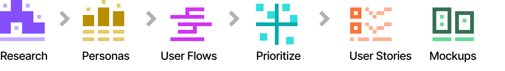
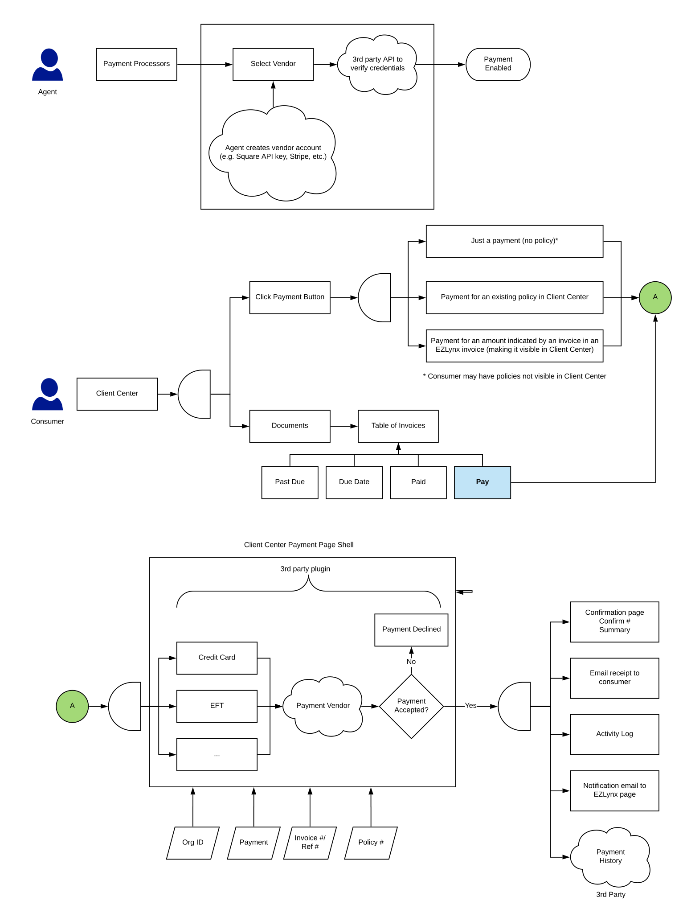

EZLynx
Client Center
Client Center is a mobile web app that insurance agencies' customers can use to access their policies and other documents outside of office hours.
Background
When I joined EZLynx, I spent a lot of time trying to build an inventory of everything that EZLynx offered. I found out about the EZLynx mobile app, Client Center, completely by accident when one of the product managers asked for some help designing some screens. That lead me down a rabbit hole as I tried to find out more about this mobile app, and how I could try it out. Getting access to the app wasn't easy. It took over a year to gather data on the app and get approval to make a case to work on it.
Establishing a Timeline
For this project, I partnered with a close colleague of mine at EZLynx DJ*. We had worked together from the day I joined EZLynx, and had formed a close working relationship.
Since this was a grassroots effort and not part of the executive roadmap, we knew that we would need to get executive support to keep this project funded. Based on my experience with other similar projects at EZLynx, if the project didn't get to development within 4-6 months, the executives would interest, and we would lose our change to fix the issues with CLient Center.
DJ and I gave ourselves 2-3 months for the research and ideation phase of the project. That left another 2-3 months to create a backlog, get the developers on board and start building an MVP, so we could show the executives enough progress to continue fund this project.
Setting Objectives and Key Results
OKRs were a new concept to me at the time. I had been reading about how OKRs were used in Silicon Valley to help teams achieve moonshots, and I felt like this was an excellent opportunity to experiment with this idea. DJ and I deliberated and decided on the following objectives for key results, for ourselves and ways to measure our progress. This was our first time doing this, so our approach was a little rough.
Objectives
- Increase Usage
- Increase Self Service Instead of calling agent
- Increase engagement 20% year over year
Key Results
- One-click access to ID Cards Fewer clicks
- Best-in-class mobile experience
- Improved findability
How do we measure?
- Database Requests
- FullStory
We used the following process.
Research
We started by interviewing agencies that have been using Client Center. We asked the agencies if we could interview their customers, but they were reluctant to do so.


The app had a long list of problems.
- Finding the app was difficult. The agency's customer either had to memorize a unique URL, or go to the agency's website, and then find the correct button.
- The app had a lot of accessibility issues. For example, the text was light gray on white and difficult to read.
- Key features, such as downloading proof of insurance, were not easily discoverable.
- The app offered a much more limited set of features compared to the desktop app.
Insurance agents had to train their customers on how to use the app.
- Agents had to walk customers through using the app.
- Most of the agencies' customers found the app so confusing, they refused to use it.
- A lot of agents simply refused to mention the mobile app to their customers.
Customer support is a key differentiator for insurance agents. Agents were afraid a bad experience with the EZLynx mobile app would cause customers to defect. Some agencies even designed their own custom apps through 3rd party app developers.
App Goals
After analyzing the agents pain points, DJ and I came up with a set of goals for the app.
- The app should not require training — ease of use was first and foremost.
- The app should offer quick and easy access to the documents that customers needed most when agents were out of the office.
- The app should be able to handle the vast majority of requests from customers but be smart enough to fall back to the agent when necessary.
- The app should be like a partner to the agent, offloading the pressure of doing support calls for thousands of clients by supporting customers like a real person (virtual agent).
The order of the goals was from most important and simplest, to most difficult.
Prioritization
One reason I chose DJ to work with me on Client Center is that as a product manager he had a lot of feature requests from prior interviews with agents. In addition, DJ and I had a lot of experience working with the various scrum teams at EZLynx, so we knew what the teams were capable and how difficult it would be for them to develop certain features.
We grabbed a bunch of Post-It notes and quickly wrote down all the features that we had noted down. I then whiteboarded a 2x2 matrix of Must Have vs Complexity, and we placed the features on the matrix. This helped us prioritize the order in which I we would develop the features.

User Stories
DJ and I took the features and broke them down into a detailed list of user stories.
User Flows
There was one last step before I could start mocking up the screens, and that was the user flows. Below are a sample of the user flows.
Screens
Once I had the list of user stories and flows, it was time to ideate on the designs of the screens. I went through several versions before settling on the final version below.
The designs below were based on Material Design 2. I had read the Material documentation and fallen in love with the design principles behind it, and the abundant supply of resources, given my own lack of resources and time.
Although Client Center would be used by multiple agencies, each with their own brand, I did not have the time or resources to create individual styles or style guides for each agency. So I decided to go with a neutral color scheme for the main app, with a splash of color for the primary, secondary, and tertiary accents, and additional color on the home screen representing each insurance company, something we could programmatically obtain from our database.
One of the app goals was "The app should be like a partner to the agent". With that in mind the home page was designed to be as friendly as possible. We put the agent's face on the homepage to humanize the app, and set the "Good morning ..." text in Roboto Slab, which I find to be a warm welcoming font, in contrast to Roboto Sans Serif which is more business like and cool.
The insurance policy cards are set in primary colors and are inspired by Vignelli Associates graphics design examples from the 1960s.
With the rest of the designs, I tried to follow the Material 2 guidelines as closely as possible, deviating whenever they affected the usability of the app.


DJ and I iterated on the screens and we did a couple of rounds of usability testing in house to validate the designs.
Conclusion
Client Center was one of the projects that was not on the executive roadmap. I took the initiative to look into it and work on it based on the complaints I heard from customers and the lack of action from anyone else on the product team. I had to work hard to get approval on the project, and I had to learn a lot of new things from OKRs to prioritization to roadmaps. The end result was a vastly improved design over the existing application, and a hugely improved and far more accessible and functional user experience.
So, How can I help you?